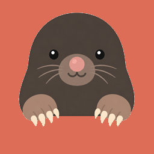

반차관리 휴가 도우미
인사정보는 이 PC에서만 확인합니다.
연결 상태를 확인하는 중입니다.
내 반차 연결
직원
이름을 선택하세요
개인 PIN
반차 새로고침
PIN은 현재 Chrome 실행 중에만 기억하며 디스크에 저장하지 않습니다.
인사정보 연결
인사정보 열기
로그인 화면 입력 보조
인사정보 아이디
인사정보 비밀번호
로그인칸 채우기
아이디와 비밀번호는 저장하거나 반차관리 서버로 보내지 않습니다. 로그인 버튼은 직접 누르세요.
현재 인사정보 화면에서 잔여량 확인
공식 연차 잔여량
-
미반영 반차
-
실제 참고 가능량
-
인사정보 휴가사용현황 화면에서 확인 버튼을 눌러 주세요.
휴가 1일로 묶을 반차
반차 내역을 먼저 불러와 주세요.
선택한 반차 2건 묶기
신청일은 선택한 날짜 중 가장 빠른 날로 자동 지정됩니다.
신청 준비 및 사용기록
아직 묶은 반차가 없습니다.
연결 설정
반차관리 사이트 주소
주소 저장